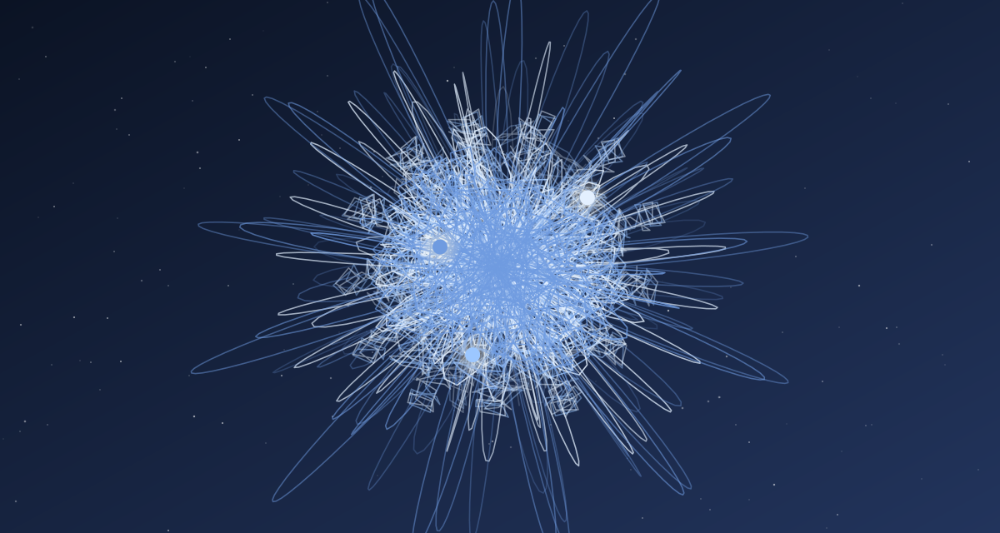

Задача трёх тел · глава 18 из 35
Встреча

Кратко
В маленьком кафе Ван Мяо находит встречу игроков, которую ведёт Пань Хань. Ван тайком сообщает Ши Цяну, и тот велит ему изображать единомышленника. Пань Хань объявляет: Трисолярис — мир игры — существует на самом деле. Он спрашивает каждого, хотели бы они, чтобы эта цивилизация пришла на Землю, и выгоняет двоих несогласных. Остальные, разочарованные в человечестве, говорят «да».
Главные моменты
- Игроки — образованные, успешные люди, разочарованные в собственном мире.
- «Трисолярис реален» — игра оказывается агитацией.
- Ван Мяо становится агентом под прикрытием.
Значение
Перелом: фантастическое допущение — инопланетная цивилизация — становится реальностью романа, а игра — способом вербовки.